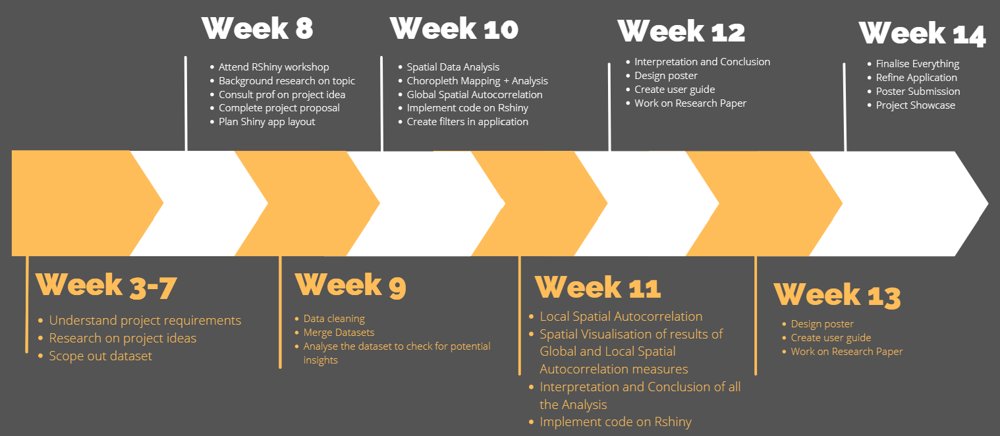
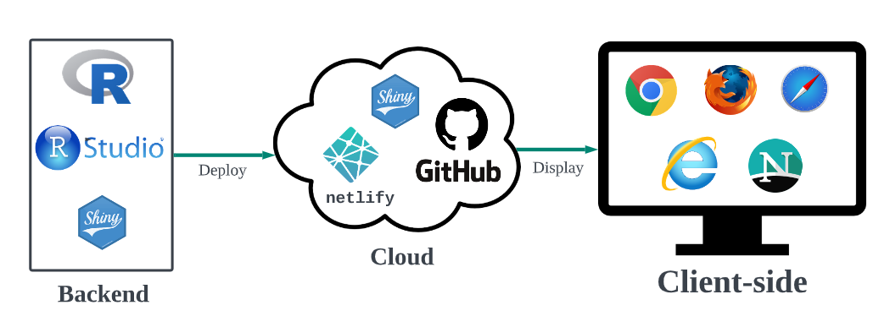
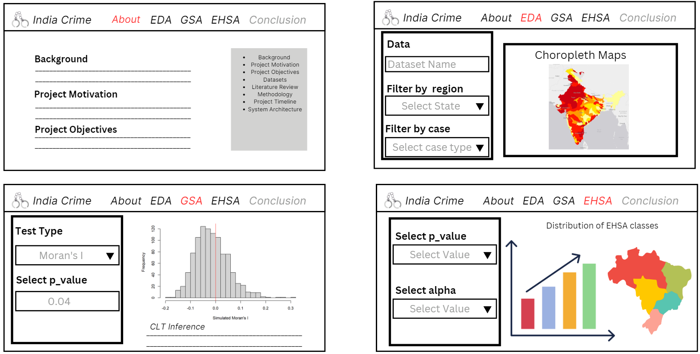

Project Proposal
Background
India has a high rate of crime. Crime rates in India can vary depending on the region, with certain areas experiencing higher rates of crime than others. For example, tourist destinations such as Delhi, Goa, and Mumbai are known to have higher rates of petty crime, such as pick pocketing and theft, especially in crowded areas like markets and train stations. However, violent crime against tourists is rare in India.
Project Motivation
India is known for its rich cultural and historical heritage, various kinds of ecology, places of natural beauty, heart touching ancient and much more are spread across the country. There are definitely enough attractive destinations for overseas tourists. However, with the high crime rate in India, it will discouraged tourist from visiting India and appreciate its unique culture.
Therefore, we hope that creating this application can bring benefits to multiple stakeholders: by helping policymakers understand the nature and extent of crime rate in the different districts of India so that they could work on investigation and enforce stricter law in the identified high crime districts. Additionally, it aims to also help to raise public awareness about crime and safety issues, tourists can make more informed choices to where they want to go after knowing the crime rates in different districts in India.
Project Objectives
Our research would focus on conducting a geospatial analysis of crime patterns in India by identifying the crime rates in the different districts of India. Additionally, we will also be analysing the types of crimes and offenders in each district, with the aim of aiding crime prevention and law enforcement efforts.
Datasets
- Districtwise IPC Crimes 2021:
- Districtwise SLL Crimes 2021:
Literature Review
Methodology
For our project, we will be using a collection of geospatial statistical for measuring global and local spatial analysis of crime in the districts of India. Spatial autocorrelation refers to the degree to which neighboring locations are similar or dissimilar in terms of a particular attribute (crime rate in our case).
These spatial statistics are well suited for:
Detecting clusters or outliers
Identifying hot spot or cold spot areas
Assessing the assumptions of stationary
Identifying distances beyond which no discernible association obtains
The following is our methodoly for analysing the crime rates in India at district level –
Data Collection and Preprocessing: We will collect and preprocess crime data for India, including the location data in the form of latitude and longitude coordinates, along with other relevant attributes such as crime type, time and date of occurrence, etc.
Spatial Data Analysis: We will conduct exploratory spatial data analysis (ESDA) to examine the spatial distribution of crime in India using choropleth maps, histograms, and spatial autocorrelation plots.
Global Spatial Autocorrelation: We will calculate Global Spatial Autocorrelation measures such as Moran’s I or Geary’s C to identify whether the spatial pattern of crime incidents is clustered, dispersed or random.
Local Spatial Autocorrelation: We will calculate Local Spatial Autocorrelation measures such as Local Moran’s I, Geary’s C and Getis-Ord Gi* to identify hotspots (high-high) and coldspots (low-low) of crime incidents across India.
Spatial Visualization: We will then visualize the results of Global and Local Spatial Autocorrelation measures using maps, heatmaps, or other visualization techniques. This can help to identify spatial patterns and clusters of crime incidents and to highlight areas that may require further investigation or intervention.
Interpretation and Conclusion: Lastly, we interpret the results of the analysis and draw conclusions about the spatial patterns and drivers of crime incidents in India.
Project Timeline

Application System Architecture

Storyboard
